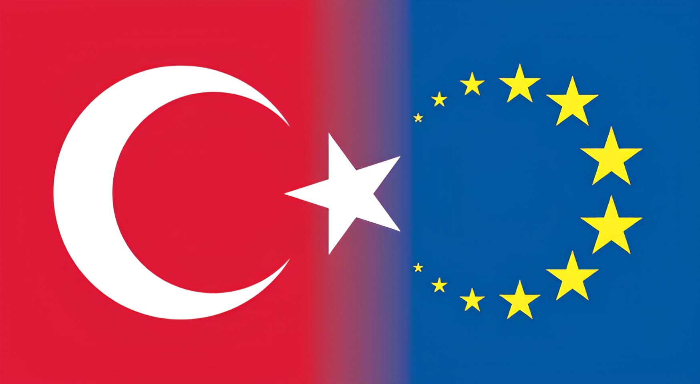
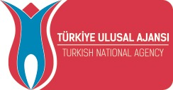
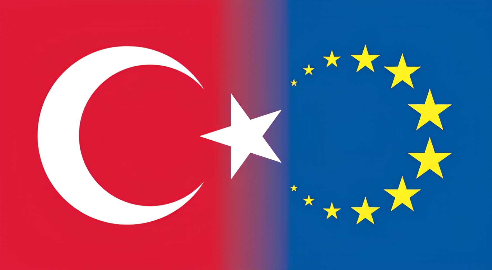
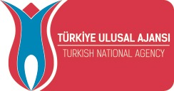
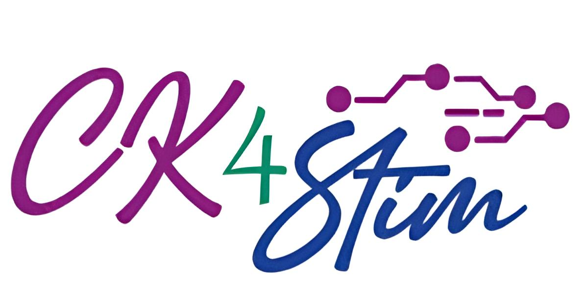
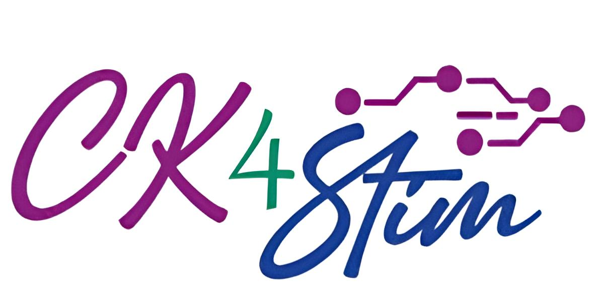

 

Kurslar
(Kurs isimlerini tıklayarak ayrıntılı bilgi alabilirsiniz.)
| Kurs / Eğitim İsmi | Eğitmen | Yer | Tarih / Saat |
| Teoriden Pratiğe Fizyoterapi ve Rehabilitasyonda Nörovejetatif Sistem Regulasyonu | Dr. Öğr. Üyesi Çağlar SOYLU | Laboratuvar 1 | 09.05.2024 / 09.30-12.30 |
| Fizyoterapide ve Rehabiltasyonda Bütüncül Yaklaşım: Bio-regeneratif Terapi Konsepti | Fzt, CPNI Kadri ÖZDEMİR | Laboratuvar 2 | 09.05.2024 / 09.30-12.30 |
| Fasya: Teorikten Pratiğe | Doç. Dr. Gül Deniz YILMAZ YELVAR | Laboratuvar 1 | 09.05.2024 / 13.30-16.30 |
| Fonksiyonel Solunum Kas Eğitimi | Prof. Dr. Yasemin ÇIRAK | Laboratuvar 2 | 09.05.2024 / 13.30-16.30 |
| Multipl Sklerozda Güncel Yaklaşımlar | Dr. Fzt. Zuhal ABASIYANIK | Derslik 1 | 09.05.2024 / 09.30-12.30 |
| Tendon Yaralanmalarında Güncel Uygulamalar | Dr. Fzt. Barış SEVEN | Derslik 2 | 09.05.2024 / 09.30-12.30 |
| Sporcularda Diz Bölgesi Bantlama Uygulamaları | Doç. Dr. Umut Ziya KOÇAK | Derslik 1 | 09.05.2024 / 13.30-16.30 |
| Ölçek Uyarlama Eğitimi | Dr. Öğr. Üyesi Devrim Can SARAÇ | Derslik 2 | 09.05.2024 / 13.30-16.30 |
| Riskli Yenidoğanlarda Değerlendirme ve Motor Gelişime Dayalı Rehabilitasyon Yaklaşımları Eğitimi | Dr. Fzt. Merve KURT AYDIN | Derslik 3 | 09.05.2024 / 09.30-12.30 |
| Neck and TMJ Treatment (Boyun ve Temporomandibular Eklem Tedavisi) | Prof. Dr. Guy Simoneau | Laboratuvar 1 | 12.05.2024 / 09.30-12.30 |
| SkolyoPilates | Dr. Öğr. Üyesi Kadriye TOMBAK - Fzt. Adem TOMBAK | Laboratuvar 2 | 12.05.2024 / 9.30-12.30 |
| Low Back Pain Treatment (Bel Ağrısı Tedavisi) | Prof. Dr. Guy Simoneau | Laboratuvar 1 | 12.05.2024 / 13.30-16.30 |